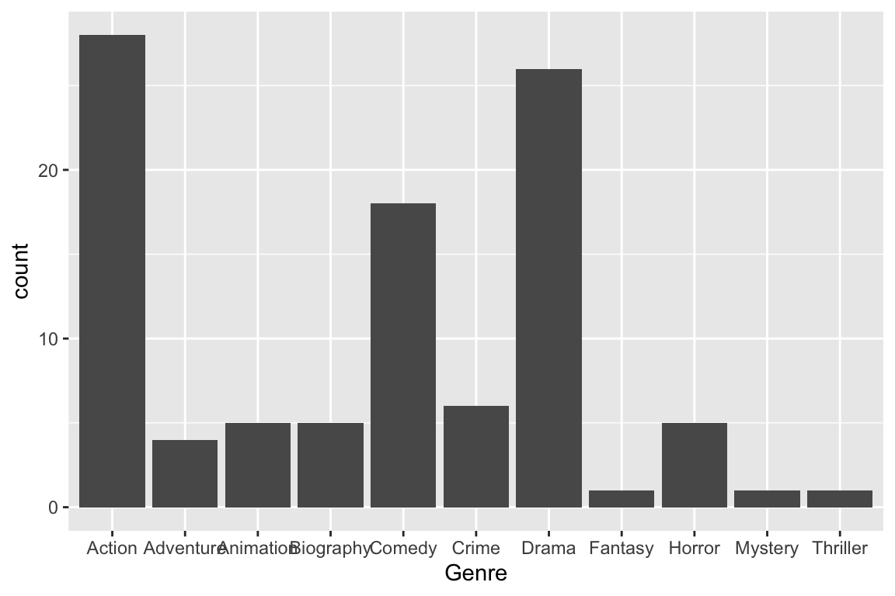

#Loading the rvest and tidyverse package#Specifying the url for desired website to be scrapedurl <-"https://www.imdb.com/search/title/?title_type=feature&release_date=2021-01-01,2021-12-31&count=100"#Reading the HTML code from the website(webpage <-read_html(url))
Use SelectorGadget to find the CSS selector .lister-item-header a.
# Using CSS selectors to scrap the title section(title_data_html <-html_nodes(webpage, '.lister-item-header a'))
{xml_nodeset (100)}
[1] <a href="/title/tt11847410/?ref_=adv_li_tt">The Fallout</a>
[2] <a href="/title/tt1160419/?ref_=adv_li_tt">Dune</a>
[3] <a href="/title/tt10872600/?ref_=adv_li_tt">Spider-Man: No Way Home</a>
[4] <a href="/title/tt10187208/?ref_=adv_li_tt">A Boy Called Christmas</a>
[5] <a href="/title/tt2382320/?ref_=adv_li_tt">No Time to Die</a>
[6] <a href="/title/tt10752004/?ref_=adv_li_tt">Love Hard</a>
[7] <a href="/title/tt11555492/?ref_=adv_li_tt">Farha</a>
[8] <a href="/title/tt6334354/?ref_=adv_li_tt">The Suicide Squad</a>
[9] <a href="/title/tt13269536/?ref_=adv_li_tt">Girl in the Basement</a>
[10] <a href="/title/tt11540284/?ref_=adv_li_tt">8-Bit Christmas</a>
[11] <a href="/title/tt10016180/?ref_=adv_li_tt">The Little Things</a>
[12] <a href="/title/tt11271038/?ref_=adv_li_tt">Licorice Pizza</a>
[13] <a href="/title/tt6467266/?ref_=adv_li_tt">Sing 2</a>
[14] <a href="/title/tt11012066/?ref_=adv_li_tt">Home Sweet Home Alone</a>
[15] <a href="/title/tt7144666/?ref_=adv_li_tt">The Black Phone</a>
[16] <a href="/title/tt11286314/?ref_=adv_li_tt">Don't Look Up</a>
[17] <a href="/title/tt12361974/?ref_=adv_li_tt">Zack Snyder's Justice League ...
[18] <a href="/title/tt11493006/?ref_=adv_li_tt">Mako</a>
[19] <a href="/title/tt14315756/?ref_=adv_li_tt">Single All the Way</a>
[20] <a href="/title/tt9032400/?ref_=adv_li_tt">Eternals</a>
...
# Converting the title data to text(title_data <-html_text(title_data_html))
[1] "The Fallout"
[2] "Dune"
[3] "Spider-Man: No Way Home"
[4] "A Boy Called Christmas"
[5] "No Time to Die"
[6] "Love Hard"
[7] "Farha"
[8] "The Suicide Squad"
[9] "Girl in the Basement"
[10] "8-Bit Christmas"
[11] "The Little Things"
[12] "Licorice Pizza"
[13] "Sing 2"
[14] "Home Sweet Home Alone"
[15] "The Black Phone"
[16] "Don't Look Up"
[17] "Zack Snyder's Justice League"
[18] "Mako"
[19] "Single All the Way"
[20] "Eternals"
[21] "Nobody"
[22] "Free Guy"
[23] "The King's Man"
[24] "Encanto"
[25] "Last Night in Soho"
[26] "The Worst Person in the World"
[27] "House of Gucci"
[28] "Ghostbusters: Afterlife"
[29] "Mad God"
[30] "The Matrix Resurrections"
[31] "Nightmare Alley"
[32] "Infinite"
[33] "Father Christmas Is Back"
[34] "Silent Night"
[35] "Wrath of Man"
[36] "F9: The Fast Saga"
[37] "Black Widow"
[38] "Pleasure"
[39] "CODA"
[40] "A Castle for Christmas"
[41] "The Last Duel"
[42] "Old"
[43] "Yes Day"
[44] "West Side Story"
[45] "After Yang"
[46] "The Power of the Dog"
[47] "Shang-Chi and the Legend of the Ten Rings"
[48] "The Legend of Molly Johnson"
[49] "Red Notice"
[50] "The Green Knight"
[51] "Operation Mincemeat"
[52] "The Guilty"
[53] "The Voyeurs"
[54] "The Tomorrow War"
[55] "Mortal Kombat"
[56] "Godzilla vs. Kong"
[57] "Belfast"
[58] "The Many Saints of Newark"
[59] "Army of Thieves"
[60] "Army of the Dead"
[61] "Cyrano"
[62] "Cruella"
[63] "The Innocents"
[64] "Malignant"
[65] "Pushpa: The Rise - Part 1"
[66] "Boiling Point"
[67] "Marcel the Shell with Shoes On"
[68] "Venom: Let There Be Carnage"
[69] "Drive My Car"
[70] "The Harder They Fall"
[71] "King Richard"
[72] "Pig"
[73] "Jungle Cruise"
[74] "The Sadness"
[75] "Rumble"
[76] "The Hating Game"
[77] "Voyagers"
[78] "Resident Evil: Welcome to Raccoon City"
[79] "Red Rocket"
[80] "The Vault"
[81] "The Ravine"
[82] "Benedetta"
[83] "After We Fell"
[84] "Spencer"
[85] "The Conjuring: The Devil Made Me Do It"
[86] "tick, tick... BOOM!"
[87] "The Forgiven"
[88] "Three Wishes for Cinderella"
[89] "Finch"
[90] "Antlers"
[91] "No Sudden Move"
[92] "The Electrical Life of Louis Wain"
[93] "Raya and the Last Dragon"
[94] "Luca"
[95] "Titane"
[96] "On the Count of Three"
[97] "The Lady of Heaven"
[98] "Gunpowder Milkshake"
[99] "The Tragedy of Macbeth"
[100] "Happening"
3.3 Description
# Using CSS selectors to scrap the description section(description_data_html <-html_nodes(webpage, '.ratings-bar+ .text-muted'))
{xml_nodeset (100)}
[1] <p class="text-muted">\nHigh schooler Vada navigates the emotional fallo ...
[2] <p class="text-muted">\nA noble family becomes embroiled in a war for co ...
[3] <p class="text-muted">\nWith Spider-Man's identity now revealed, Peter a ...
[4] <p class="text-muted">\nIn this origin story of Father Christmas, an ord ...
[5] <p class="text-muted">\nJames Bond has left active service. His peace is ...
[6] <p class="text-muted">\nAn LA girl, unlucky in love, falls for an East C ...
[7] <p class="text-muted">\nA 14-year-old girl in 1948 Palestine watches fro ...
[8] <p class="text-muted">\nSupervillains Harley Quinn, Bloodsport, Peacemak ...
[9] <p class="text-muted">\nSarah is a teen girl who is looking forward to h ...
[10] <p class="text-muted">\nIn 1980s Chicago, a 10-year-old sets out on a qu ...
[11] <p class="text-muted">\nKern County Deputy Sheriff Joe Deacon is sent to ...
[12] <p class="text-muted">\nThe story of Alana Kane and Gary Valentine growi ...
[13] <p class="text-muted">\nBuster Moon and his friends must persuade reclus ...
[14] <p class="text-muted">\nA married couple tries to steal back a valuable ...
[15] <p class="text-muted">\nAfter being abducted by a child killer and locke ...
[16] <p class="text-muted">\nTwo low-level astronomers must go on a giant med ...
[17] <p class="text-muted">\nDetermined to ensure that Superman's ultimate sa ...
[18] <p class="text-muted">\nEight Business Men decide to go to location of E ...
[19] <p class="text-muted">\nDesperate to avoid his family's judgment about h ...
[20] <p class="text-muted">\nThe saga of the Eternals, a race of immortal bei ...
...
# Converting the description data to textdescription_data <-html_text(description_data_html)# take a look at first fewhead(description_data)
[1] "\nHigh schooler Vada navigates the emotional fallout she experiences in the wake of a school tragedy. Relationships with her family, friends and view of the world are forever altered."
[2] "\nA noble family becomes embroiled in a war for control over the galaxy's most valuable asset while its heir becomes troubled by visions of a dark future."
[3] "\nWith Spider-Man's identity now revealed, Peter asks Doctor Strange for help. When a spell goes wrong, dangerous foes from other worlds start to appear, forcing Peter to discover what it truly means to be Spider-Man."
[4] "\nIn this origin story of Father Christmas, an ordinary boy (with a loyal pet mouse and a reindeer at his side) sets out on an extraordinary adventure to find his father who is on a quest to discover the fabled village of Elfhelm."
[5] "\nJames Bond has left active service. His peace is short-lived when Felix Leiter, an old friend from the CIA, turns up asking for help, leading Bond onto the trail of a mysterious villain armed with dangerous new technology."
[6] "\nAn LA girl, unlucky in love, falls for an East Coast guy on a dating app and decides to surprise him for the holidays, only to discover that she's been catfished. This lighthearted romantic comedy chronicles her attempt to reel in love."
# strip the '\n'description_data <-str_replace(description_data, "^\\n", "")head(description_data)
[1] "High schooler Vada navigates the emotional fallout she experiences in the wake of a school tragedy. Relationships with her family, friends and view of the world are forever altered."
[2] "A noble family becomes embroiled in a war for control over the galaxy's most valuable asset while its heir becomes troubled by visions of a dark future."
[3] "With Spider-Man's identity now revealed, Peter asks Doctor Strange for help. When a spell goes wrong, dangerous foes from other worlds start to appear, forcing Peter to discover what it truly means to be Spider-Man."
[4] "In this origin story of Father Christmas, an ordinary boy (with a loyal pet mouse and a reindeer at his side) sets out on an extraordinary adventure to find his father who is on a quest to discover the fabled village of Elfhelm."
[5] "James Bond has left active service. His peace is short-lived when Felix Leiter, an old friend from the CIA, turns up asking for help, leading Bond onto the trail of a mysterious villain armed with dangerous new technology."
[6] "An LA girl, unlucky in love, falls for an East Coast guy on a dating app and decides to surprise him for the holidays, only to discover that she's been catfished. This lighthearted romantic comedy chronicles her attempt to reel in love."
3.4 Runtime
Retrieve runtime data
# Using CSS selectors to scrap the Movie runtime section(runtime_data <- webpage %>%html_nodes('.runtime') %>%html_text() %>%str_replace(" min", "") %>%as.integer())
genre_data <- webpage %>%# Using CSS selectors to scrap the Movie genre sectionhtml_nodes('.genre') %>%# Converting the genre data to texthtml_text() %>%# Data-Preprocessing: retrieve the first wordstr_extract("[:alpha:]+")genre_data
We encounter the issue of missing data when scraping metascore.
We see there are only 90 meta scores. 10 movies don’t have meta scores. We may manually find which movies don’t have meta scores but that’s tedious and not reproducible.
# Using CSS selectors to scrap the metascore sectionms_data_html <-html_nodes(webpage, '.metascore')# Converting the runtime data to textms_data <-html_text(ms_data_html)# Let's have a look at the metascore ms_data <-str_replace(ms_data, "\\s*$", "") %>%as.integer()ms_data
# Using CSS selectors to scrap the gross revenue sectiongross_data_html <-html_nodes(webpage,'.ghost~ .text-muted+ span')# Converting the gross revenue data to textgross_data <-html_text(gross_data_html)# Let's have a look at the gross datagross_data
[1] NA 108.33 804.75 NA 160.87 NA NA 55.82 NA NA
[11] NA NA 162.79 NA NA NA NA NA NA 164.87
[21] 27.27 121.63 NA 96.09 NA NA NA 129.36 NA NA
[31] NA NA NA NA NA 173.20 183.65 NA NA NA
[41] NA NA NA NA NA NA 224.54 NA NA NA
[51] NA NA NA NA 42.20 100.92 NA NA NA 1.00
[61] NA 86.10 NA NA NA NA 5.79 213.55 NA NA
[71] NA NA 116.99 NA NA NA NA NA NA NA
[81] NA NA NA NA 65.63 NA NA NA NA NA
[91] NA NA NA NA NA NA NA NA NA NA
3.12 Visualizing movie data
Form a tibble:
# Combining all the lists to form a data framemovies <-tibble(Rank = rank_data, Title = title_data,Description = description_data, Runtime = runtime_data,Genre = genre_data, Rating = rating_data,Metascore = metascore_data, Votes = votes_data,Gross_Earning_in_Mil = gross_data,Director = directors_data, Actor = actors_data)movies %>%print(width=Inf)
# A tibble: 100 × 11
Rank Title
<int> <chr>
1 1 The Fallout
2 2 Dune
3 3 Spider-Man: No Way Home
4 4 A Boy Called Christmas
5 5 No Time to Die
6 6 Love Hard
7 7 Farha
8 8 The Suicide Squad
9 9 Girl in the Basement
10 10 8-Bit Christmas
Description
<chr>
1 High schooler Vada navigates the emotional fallout she experiences in the wa…
2 A noble family becomes embroiled in a war for control over the galaxy's most…
3 With Spider-Man's identity now revealed, Peter asks Doctor Strange for help.…
4 In this origin story of Father Christmas, an ordinary boy (with a loyal pet …
5 James Bond has left active service. His peace is short-lived when Felix Leit…
6 An LA girl, unlucky in love, falls for an East Coast guy on a dating app and…
7 A 14-year-old girl in 1948 Palestine watches from a locked pantry as catastr…
8 Supervillains Harley Quinn, Bloodsport, Peacemaker, and a collection of nutt…
9 Sarah is a teen girl who is looking forward to her 18th birthday to move awa…
10 In 1980s Chicago, a 10-year-old sets out on a quest to get the Christmas gif…
Runtime Genre Rating Metascore Votes Gross_Earning_in_Mil
<int> <chr> <dbl> <int> <dbl> <dbl>
1 96 Drama 7 84 20937 NA
2 155 Action 8 74 633817 108.
3 148 Action 8.3 71 753499 805.
4 106 Adventure 6.7 61 23632 NA
5 163 Action 7.3 68 400530 161.
6 104 Comedy 6.3 42 54491 NA
7 92 Drama 8.4 NA 77064 NA
8 132 Action 7.2 72 352255 55.8
9 88 Crime 6.3 NA 8074 NA
10 97 Comedy 6.7 66 18490 NA
Director Actor
<chr> <chr>
1 Megan Park Jenna Ortega
2 Denis Villeneuve Timothée Chalamet
3 Jon Watts Tom Holland
4 Gil Kenan Maggie Smith
5 Cary Joji Fukunaga Daniel Craig
6 Hernán Jiménez Nina Dobrev
7 Darin J. Sallam Karam Taher
8 James Gunn Margot Robbie
9 Elisabeth Röhm Judd Nelson
10 Michael Dowse Winslow Fegley
# … with 90 more rows
How many top 100 movies are in each genre? (Be careful with interpretation.)
movies %>%ggplot() +geom_bar(mapping =aes(x = Genre))

Which genre is most profitable in terms of average gross earnings?
Is there a relationship between gross earning and rating? Find the best selling movie (by gross earning) in each genre
library("ggrepel")(best_in_genre <- movies %>%group_by(Genre) %>%filter(row_number(desc(Gross_Earning_in_Mil)) ==1)) %>%print(width =Inf)
# A tibble: 4 × 11
# Groups: Genre [4]
Rank Title
<int> <chr>
1 3 Spider-Man: No Way Home
2 13 Sing 2
3 28 Ghostbusters: Afterlife
4 85 The Conjuring: The Devil Made Me Do It
Description
<chr>
1 With Spider-Man's identity now revealed, Peter asks Doctor Strange for help. …
2 Buster Moon and his friends must persuade reclusive rock star Clay Calloway t…
3 When a single mom and her two kids arrive in a small town, they begin to disc…
4 The Warrens investigate a murder that may be linked to a demonic possession.
Runtime Genre Rating Metascore Votes Gross_Earning_in_Mil Director
<int> <chr> <dbl> <int> <dbl> <dbl> <chr>
1 148 Action 8.3 71 753499 805. Jon Watts
2 110 Animation 7.4 49 69617 163. Garth Jennings
3 124 Adventure 7.1 45 183316 129. Jason Reitman
4 112 Horror 6.3 53 116891 65.6 Michael Chaves
Actor
<chr>
1 Tom Holland
2 Matthew McConaughey
3 Carrie Coon
4 Patrick Wilson
ggplot(movies, mapping =aes(x = Rating, y = Gross_Earning_in_Mil)) +geom_point(mapping =aes(size = Votes, color = Genre)) + ggrepel::geom_label_repel(aes(label = Title), data = best_in_genre) +labs(y ="Gross earning in millions")


 ::: :::
::: :::